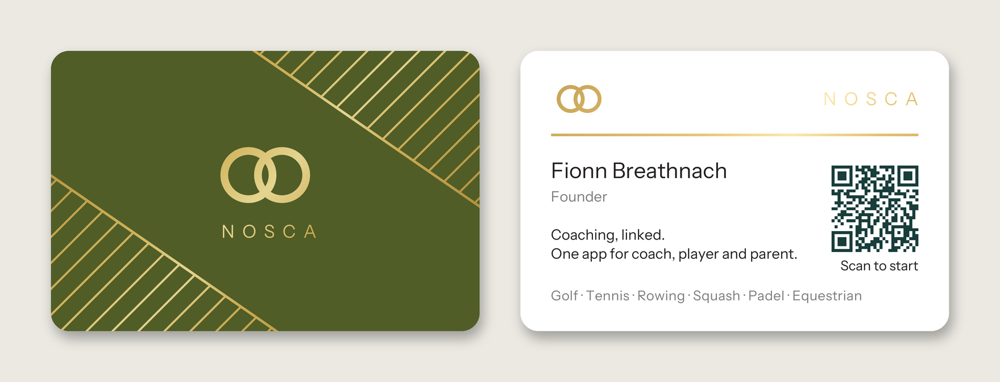

Nosca card files
MOO · Gold Foil · Super, Soft Touch · MOO size · rounded corners · foil both sides. For each side, upload the colour file as the artwork and the foil file as the foil layer. Tap a file, then Share › Save to Files if it opens instead of downloading.
